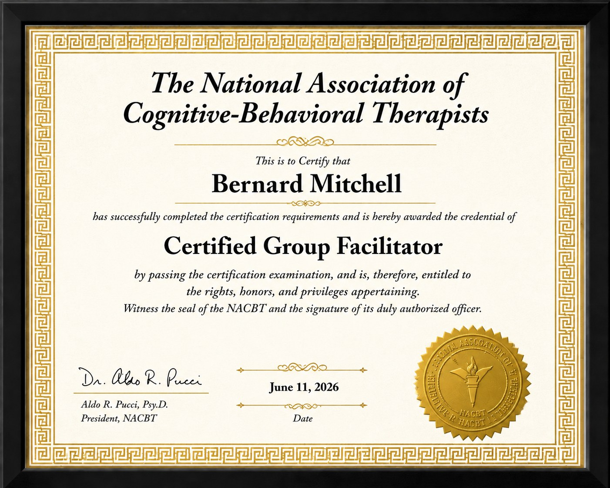
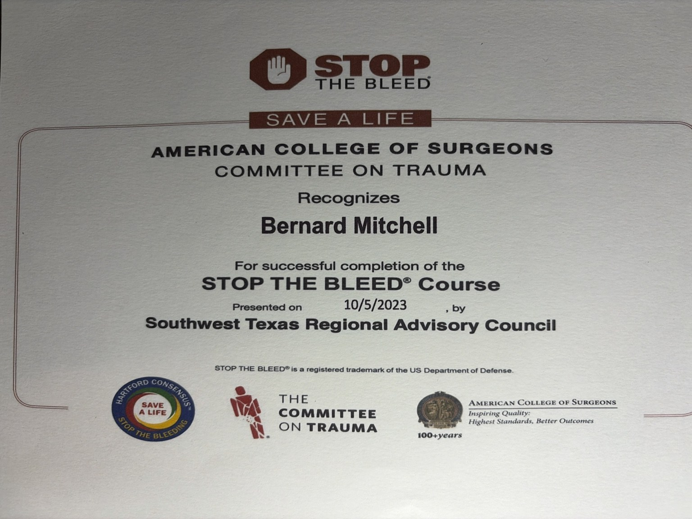
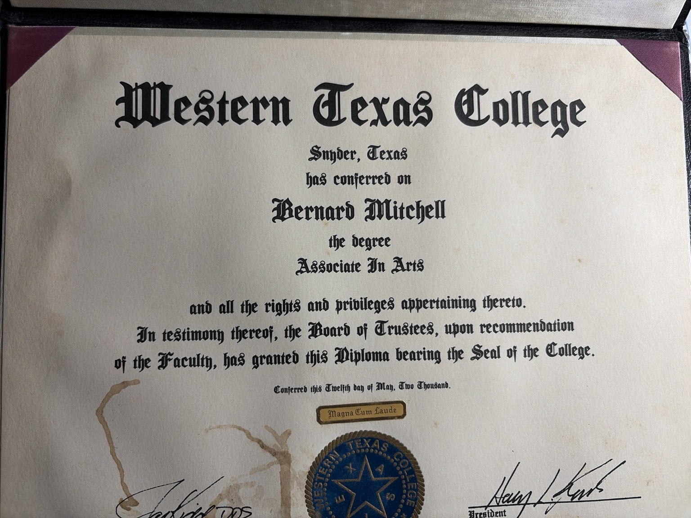

Mentorship
Guidance, accountability, and encouragement for people rebuilding stability.
San Antonio faith-based nonprofit
Busi Believers Incorporated walks with individuals, families, and small businesses through hardship with faith-centered support, leadership development, and responsible community service.
Bonding Using Stewardship and Integrity
No voice nor invoice will go unheard.
Start one clear help request for home repair, vehicle repair, property needs, mentorship, or other hardship support.
02 Volunteer SkillsShare your availability, trade skills, mentoring interest, or community service support.
03 Give or SponsorDonate to the mission, sponsor a project, or help provide materials and practical resources.
Mission
BUSI exists to strengthen individuals and communities by promoting faith, personal responsibility, leadership development, and stewardship. The work combines mentorship, education, practical support, and community partnerships.
Our approach is simple: listen first, build trust, connect people to responsible resources, and follow up with dignity.
Programs
Programs are designed for real-life needs, repeated support, and steady personal growth.
Guidance, accountability, and encouragement for people rebuilding stability.
Practical lessons in responsibility, decision-making, financial stewardship, and integrity.
Support for communication, conflict resolution, goal setting, and personal growth.
Volunteer-supported help for home repairs, vehicle needs, lawn care, and other essential projects.
Trust & transparency
BUSI is committed to clear records, ethical stewardship, and public accountability.
Founder & credentials
Founder Bernard Mitchell brings more than 20 years of combined leadership, operations management, public service, and community engagement experience.



Volunteer
BUSI welcomes volunteers for mentorship, general labor, home repair, vehicle repair, lawn care, transportation, documentation, and community outreach.
Start here